SpotYa
A social game to guess your friends' locations.
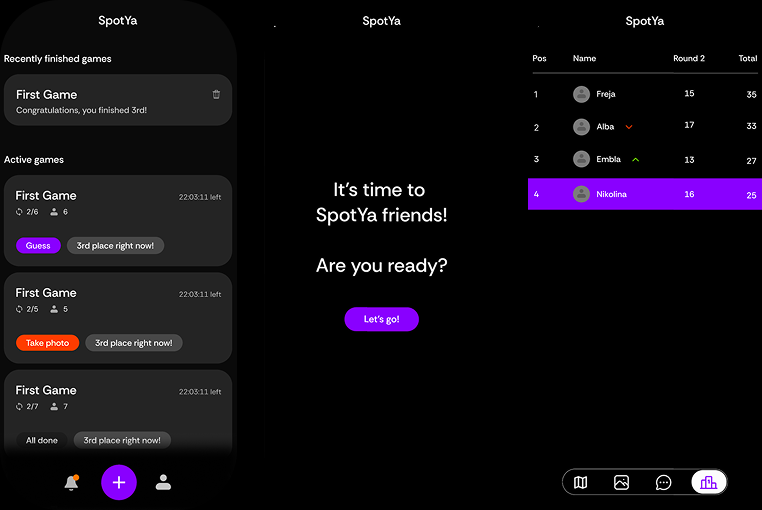
The Task
As part of the Designstudio course, the brief was to create a game that combines a digital experience with something from the real world. My team and I created Spotya - a social guessing game inspired by BeReal and GeoGuessr, where players take turns sharing a photo of their current location while friends try to guess where it was taken.
The Process
We began by brainstorming game concepts and exploring similar apps for inspiration. Once we'd settled on
the core idea, we mapped out the screens and interactions, then moved from wireframes into visual design
and prototyping in Figma.
It was a team effort from the start, with everyone contributing to the concept and overall design. As
the project moved forward, I took on more of the frontend development - working primarily in HTML, CSS
and JavaScript - while still staying involved in the design.
Tools
Wireframes
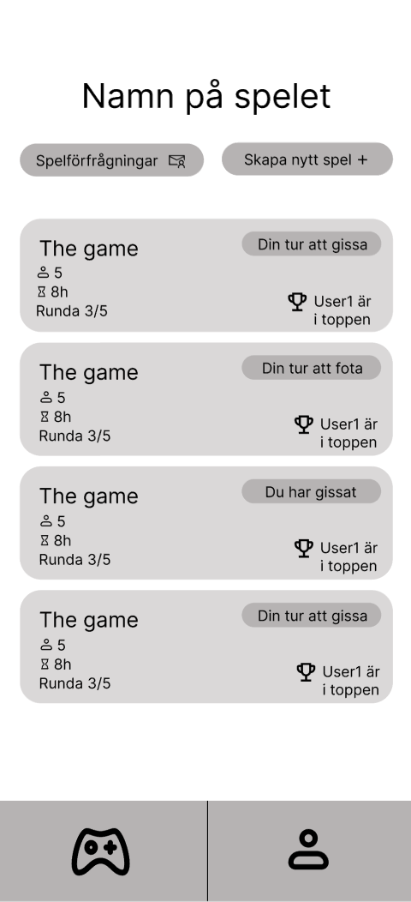
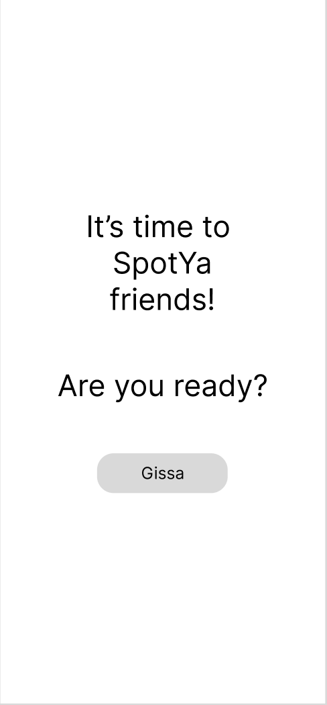
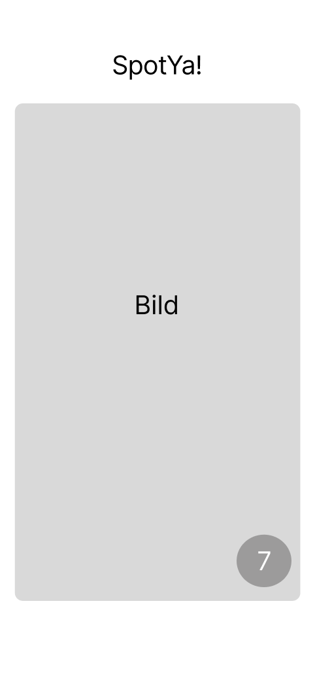
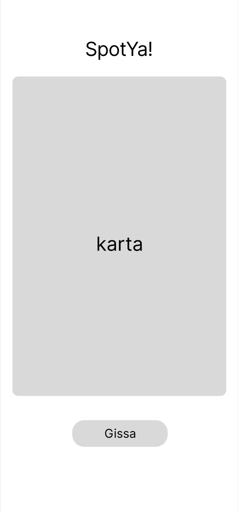
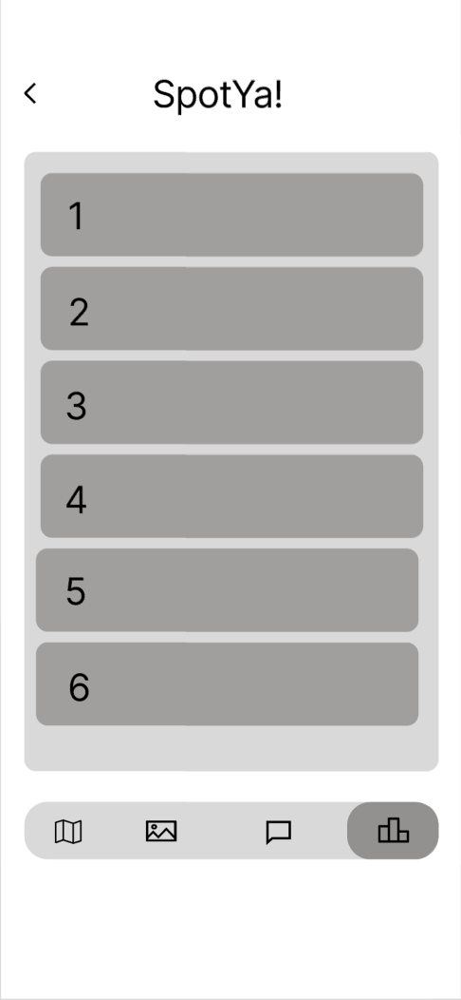
The Results
The final result was a functional prototype of Spotya, built as a mobile-first website rather than a native app. The interface was designed to make each stage of the game — from joining, to snapping and guessing, to seeing the results — clear and easy to navigate.
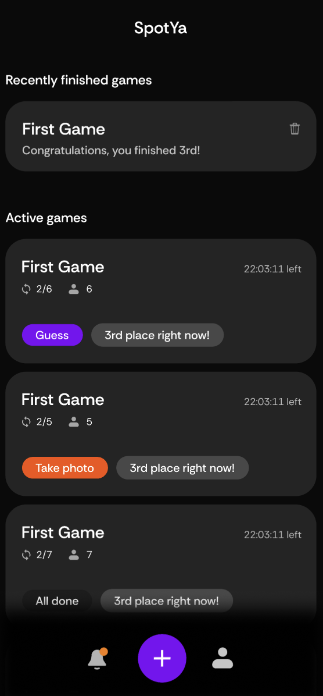
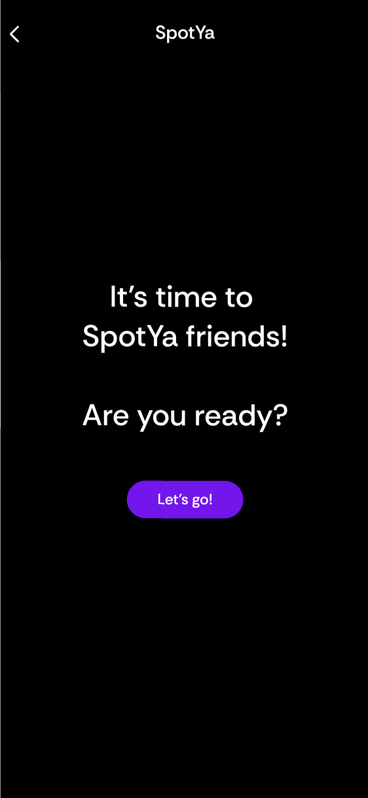
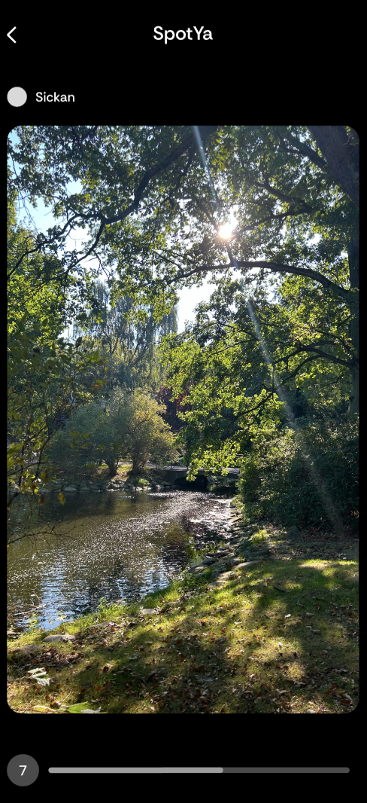
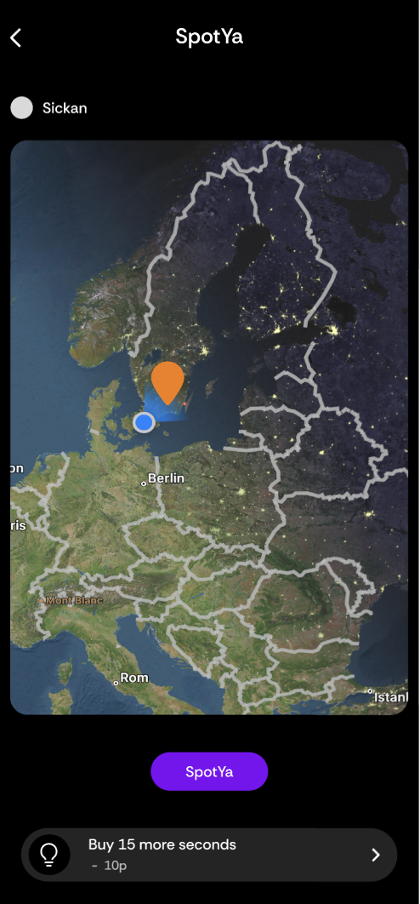
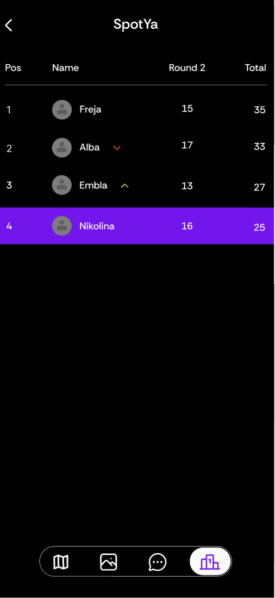